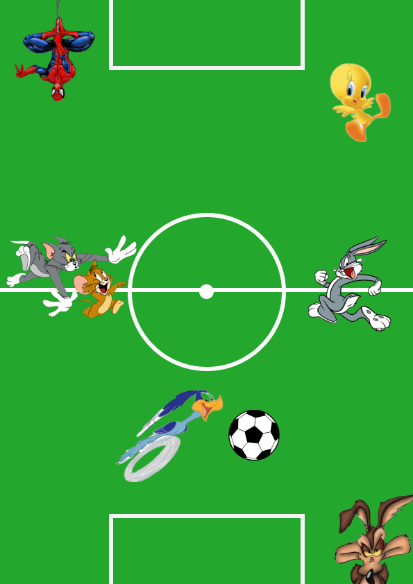
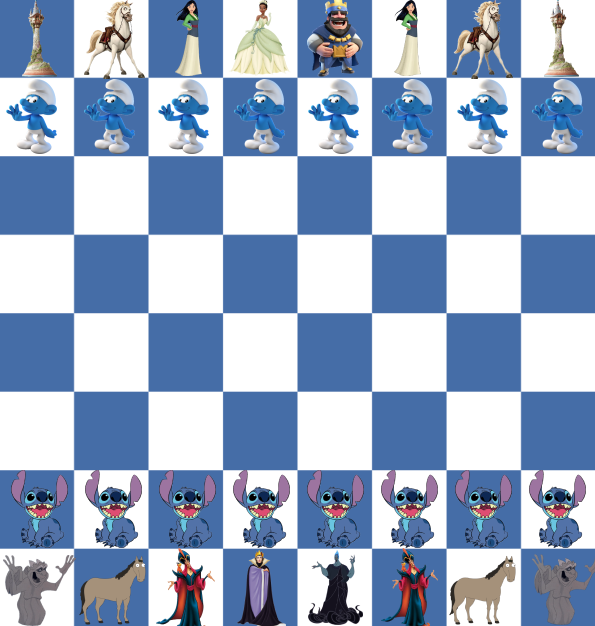

Anche quest’anno vi proponiamo il “Torneo di calcio delle GA” che si terrà durante le pause pranzo dei 3 giorni di attività.
Il torneo è un’occasione per mettersi alla prova nel calcio sfidando altri ragazzi del liceo e anche professori! Inoltre, è un bel momento data anche la calorosa atmosfera che si crea in palestra durante le partite.
Chi vincerà quest’anno? Iscriviti perché potresti essere proprio tu!
(l’iscrizione è aperta dalle 08:00 del 12/01/2026 alle 18:00 del 23/01/2026, maggiori info e regolamento nella finestra dedicata)

Come gli altri anni, durante le GA, verrà proposto il torneo di scacchi del LiLu2. Il torneo si svolgerà nelle pause pranzo delle tre giornate dalle 12:30 alle 14:00, in biblioteca (arrivate già pranzati). Per questioni logistiche, il numero è chiuso a 32 persone: affrettatevi ad iscrivervi!
